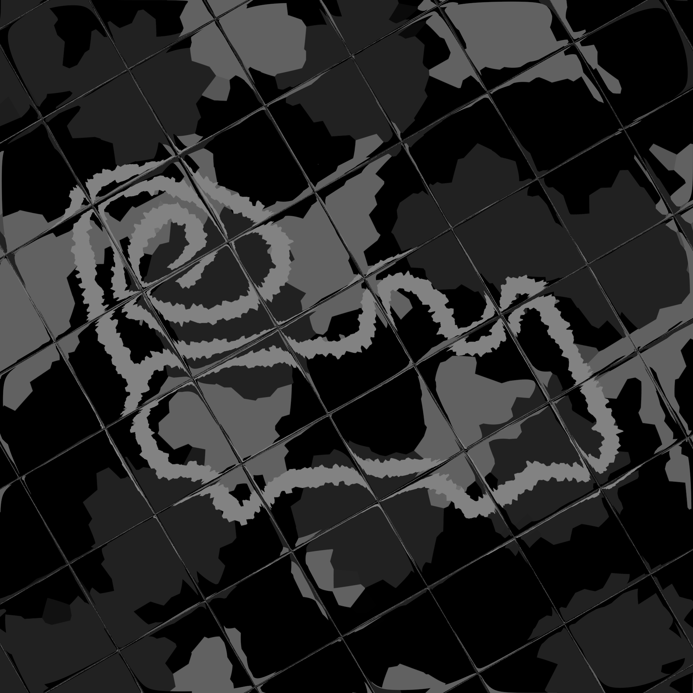
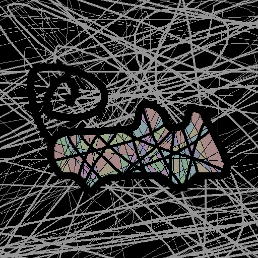

My Music
Have I already said that I make music sometimes?Albums

Imperfection
Imperfection
Singles

[ Newgrounds ] [ YouTube ]
Catharsis
I love this track and its main melody, beginning is kind of lazy, I tried to improve it several times but in the end I just returned to first version of it. Most of time spent on this project was on main melody, I listened to it over and over trying to improve it as much as I can :x Also tried my best to make Slayer2 sound good, don't know if it sounds mainstream or modern or stuff but I like it, tell me if you like it or not and what to improve[ Newgrounds ] [ YouTube ]